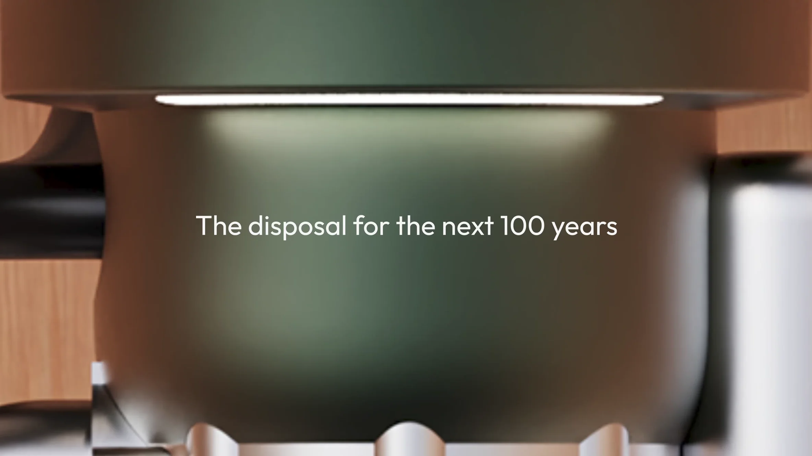
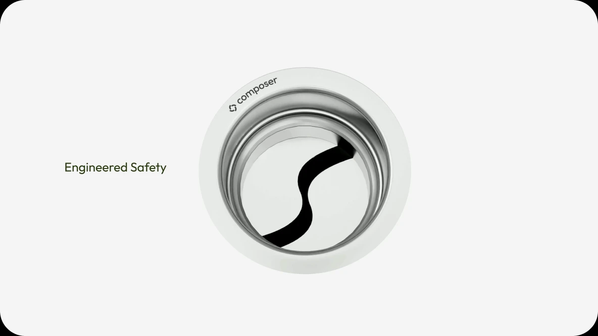
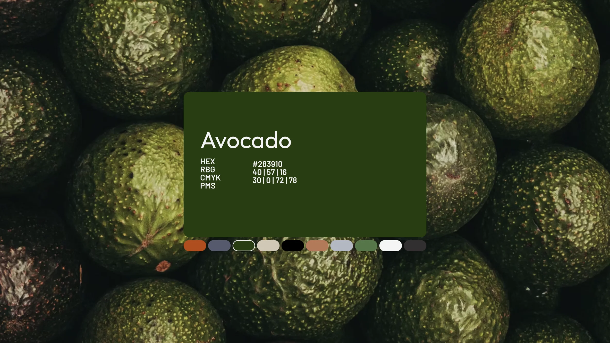
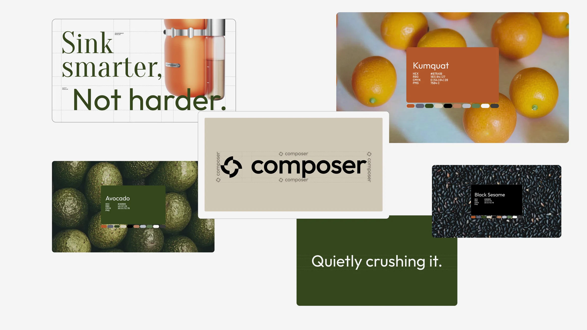

Composer, for Whipsaw
Branding, product design and motion,
told in under thirty seconds.
Motion Art Director (2026)Art Direction, Motion
Whipsaw is widely recognized for their industrial design, but they wanted to show prospective clients that their work goes deeper. They needed to prove they also handle the full brand strategy: the positioning, the archetype, the typography, and the digital identity. I was hired to create a sizzle reel that bridged this gap. The goal was to show that for the Composer disposal, the branding and the product were built as a single, unified system.
Storyboard vs Final Animation
I started by turning Whipsaw’s brand deck into a story. Two details in their work already proved the “one system” idea, so I built the film around them: three of the brand’s tone of voice lines ship word for word as site copy, and the color names (Avocado, Kumquat, Oatmeal, Black Sesame, Blueberry) are the product’s own finish names. Putting those side by side on screen makes the link between the object and the identity.
Following specific beats, starting with the product’s longevity, moving into its core features, and then transitioning into the brand hook. I used the existing 3D renders as design elements rather than just showing the product in a vacuum. This kept the focus on the brand identity while still showcasing the industrial design.

The featurette opens with a defining statement about the product.

This portion captures key brand tone of voice language and pairs it with aspects of the product that reflect those.

During the brand identity showcase portion, these cards are shown on screen to reflect the colors and tactility of those colors in the context of the composer product.

The brand identity portion closes with an overview of all the different graphical touch points that covers a mesh with the product renders to showcase how it all is one system.
I designed the assets in Figma and created storyboards to map out the motion before moving into production. I delivered two versions: a 30-second 16x9 film for web and a 9x16 version for social. Both versions maintain the same pacing and visual weight, ensuring the brand feels consistent regardless of the platform.